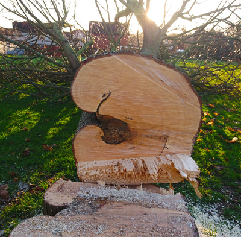
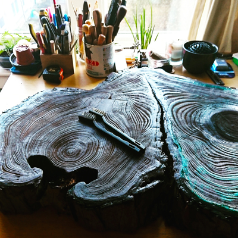

My professional life has always revolved around trees.
The structures and shapes of wood and the pathogens and conditions that affect and delimit its growth have always had an impact on me.
All my work comes from diseased trees or trees with structural imperfections that must be felled for safety. I rescue the wood from becoming firewood or ending up decomposed on the ground. In this way, the tree has a chance to leave a mark after its physical body has disappeared allowing us to appreciate its life history and the beauty within wood growth.

The engraving occurs thanks to the difference in density of the wood that grows in the rings during spring and fall. In the warmer months, the rings grow fast accumulating nutrients and the growth slows down in the months with reduced sun hours (although evergreens' growth is slightly different and so are their wood's properties). This affects the hardness of the rings.
In my prints one can see the marks left by pathologies, age growth, the good years and those that lacked water or sunlight, the imprint that physical objects left in the trunk when the tree grew over them, the formation and physiology of wood structures such as branches and many other details.

My prints are organic, I couldn't make two the same even if I wanted to. Each print is unique and slightly different even if there are several based on the same piece of wood. My editions are open and the colours and type of paper can be modified to suit individual taste.
Thank you for taking the time to look at my work.